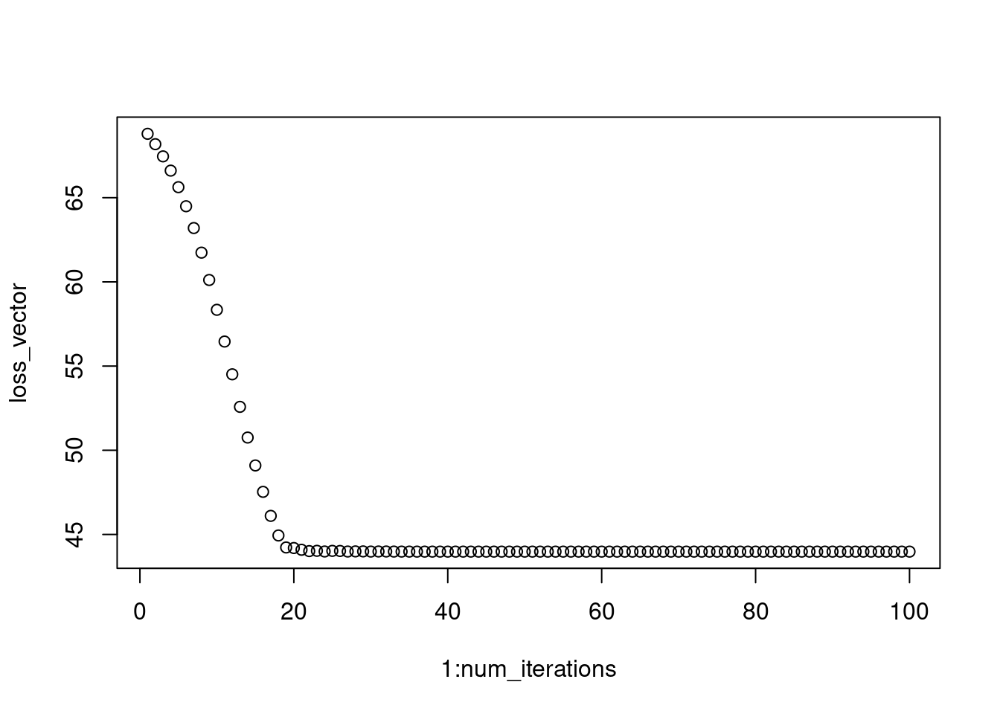
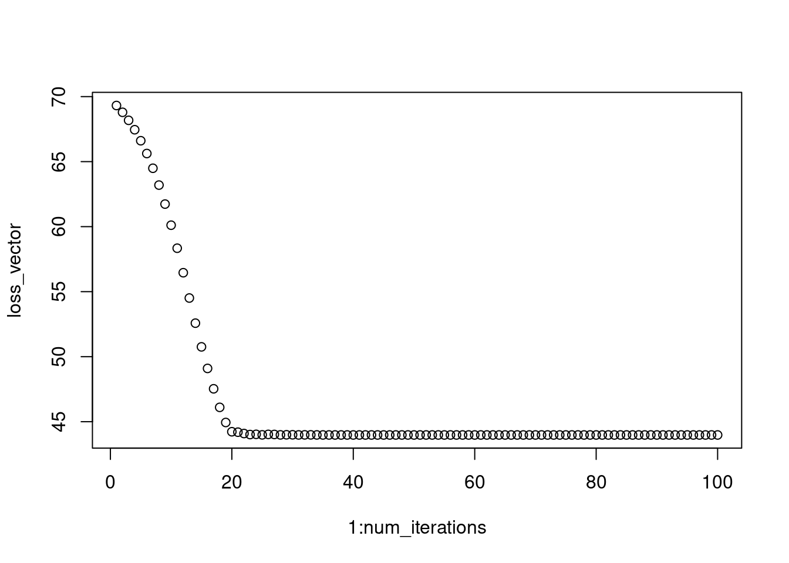
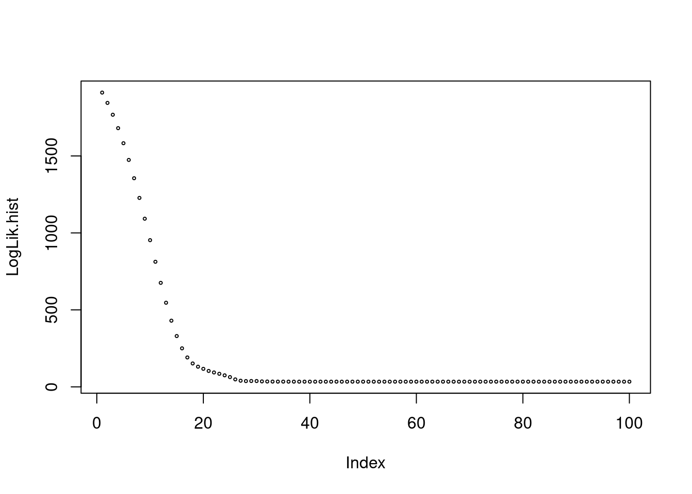
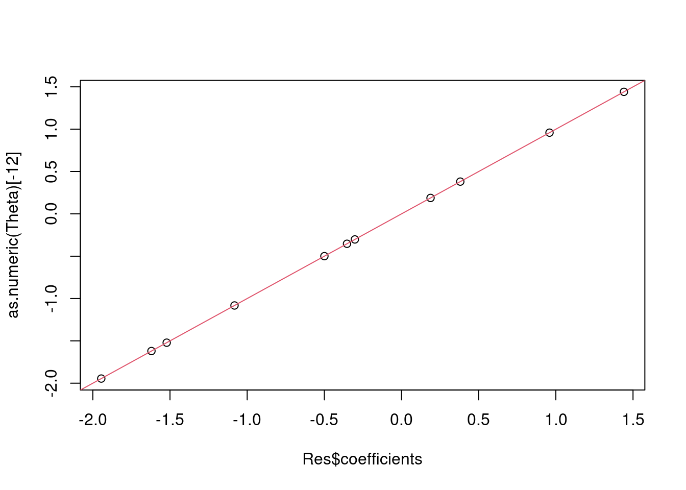
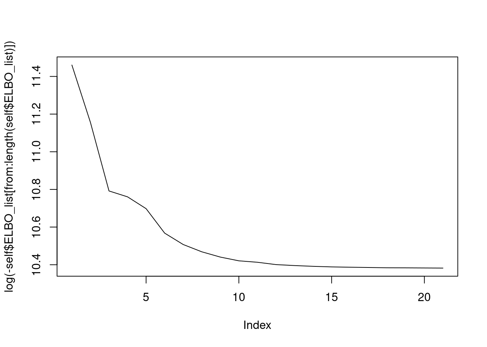

autodiff
Félix Cheysson, Julien Chiquet, Mahendra Mariadassou, Tristan Mary-Huard
2022-09-29
Exploration de {{torch}} pour la différentiation
automatique
Installation
Le package torch permet de faire de la
différentiation automatique à condition de réécrire son code avec les
fonctions de torch. Il est basé sur la librairie C++
libtorch fournie dans PyTorch. Contrairement à d’anciennes
versions, torch ne fait pas appel à python et ne
nécessite pas reticulate. L’installation en est d’autant plus
simple:
install.packages(torch)Lors de la première utilisation, torch vous demandera de
télécharger des fichiers supplémentaires via:
torch::install_torch() ## si vous avez un GPU compatible avec CUDA
## torch::install_torch(type = "cpu") ## sinontorch est surtout utilisé pour des applications en ML/IA
mais on peut aussi l’utiliser pour des calculs de gradients, hessiennes
et de l’optimisation dans des modèles plus simples. On va l’illustrer
ici pour de la régression logistique.
library(tidyverse)## ── Attaching packages ─────────────────────────────────────── tidyverse 1.3.2 ──
## ✔ ggplot2 3.3.6 ✔ purrr 0.3.4
## ✔ tibble 3.1.8 ✔ dplyr 1.0.10
## ✔ tidyr 1.2.0 ✔ stringr 1.4.1
## ✔ readr 2.1.2 ✔ forcats 0.5.2
## ── Conflicts ────────────────────────────────────────── tidyverse_conflicts() ──
## ✖ dplyr::filter() masks stats::filter()
## ✖ dplyr::lag() masks stats::lag()library(torch)Principe du calcul de gradient
torch fonctionne avec ses propres types numériques,
qu’il faut créer avec la fonction torch_tensor() et ses
propres fonctions torch_*(). Considérons un exemple très
simple: $ x x^2$
x <- torch_tensor(3)
y <- torch_square(x)
x; y## torch_tensor
## 3
## [ CPUFloatType{1} ]## torch_tensor
## 9
## [ CPUFloatType{1} ]On va pouvoir calculer \(\frac{dy}{dx}\) en définissant
x avec l’argument require_grad = TRUE. Cet
argument va spécifier que ‘x’ est entrainable et va démarrer
l’enregistrement par autograd des opérations sur ce tenseur.
Autograd est un module de torch qui permet de collecter
les gradients. Il le fait en enregistrant des données (tenseurs) et
toutes les opérations exécutées dans un graphe acyclique dirigé dont les
feuilles sont les tenseurs d’entrée et les racines les tenseurs de
sorties. Ces opérations sont stockées comme des fonctions et au moment
du calcul des gradients, sont appliquées depuis le noeud de sortie en
‘backpropagation’ le long du réseau.
x <- torch_tensor(2, requires_grad = TRUE)
x## torch_tensor
## 2
## [ CPUFloatType{1} ][ requires_grad = TRUE ]On remarque que x possède désormais un champ
$grad (même si ce dernier n’est pas encore défini).
x$grad## torch_tensor
## [ Tensor (undefined) ]Lorsqu’on calcule \(y = x^2\), ce
dernier va également hériter d’un nouveau champ
$grad_fn:
y <- torch_log(torch_square(x))
y## torch_tensor
## 1.3863
## [ CPUFloatType{1} ][ grad_fn = <LogBackward0> ]y$grad_fn## LogBackward0qui indique comment calculer le gradient en utilisant la dérivée des fonctions composées:
\[ (g\circ f)'(x) = f'(x) \times g'(f(x)) \]
et les fonctions
\[ \frac{dx^2}{dx} = 2x \quad \frac{d \log(x)}{dx} = \frac{1}{x} \]
Le calcul effectif du gradient est déclenché lors de l’appel à la
méthode $backward() de y et est stocké dans le
champ $grad de x.
x$grad ## gradient non défini## torch_tensor
## [ Tensor (undefined) ]y$backward()
x$grad ## gradient défini = 1## torch_tensor
## 1
## [ CPUFloatType{1} ]On a bien:
\[
\frac{dy}{dx} = \underbrace{\frac{dy}{dz}}_{\log}(z) \times
\underbrace{\frac{dz}{dx}}_{\text{power}}(x) = \frac{1}{4} \times 2*2 =
1
\] Intuitivement au moment du calcul de y,
torch construit un graphe computationnel qui lui permet
d’évaluer numériquement \(y\) et qui va également
servir pour calculer \(\frac{dy}{dz}\)
au moment de l’appel à la fonction $backward() issue du
module autograd.
Essayons de reproduire le calcul dans notre exemple. Le calcul forward donne
\[ x = 2 \xrightarrow{x \mapsto x^2} z = 4 \mapsto \xrightarrow{x \mapsto \log(x)} y = \log(4) \]
Pour le calcul backward, il faut donc construire le
graphe formel suivant. La première étape du graphe est accessible via
$grad_fn
y$grad_fn## LogBackward0et les fonctions suivantes via $next_functions
y$grad_fn$next_functions## [[1]]
## PowBackward0Dans notre exemple, on a donc:
\[ \frac{dy}{dy} = 1 \xrightarrow{x \mapsto \text{logBackward}(x)} \frac{dy}{dz} = \frac{dy}{dy} \times \text{logBackward}(z) \xrightarrow{x \mapsto \text{powerBackward}(x)} \frac{dy}{dx} = \frac{dy}{dz} \times \text{logBackward}(x) \]
Dans cet exemple:
- \(\text{logBackward}(x) = \frac{1}{x}\)
- \(\text{powBackward}(x) = 2x\)
Et la propagation des dérivées donne donc
\[ \frac{dy}{dy} = 1 \to \frac{dy}{dz} = 1 \times \frac{1}{4} = \frac{1}{4} \to \frac{dy}{dx} = \frac{1}{4} \times 4 = 1 \]
Ce graphe est illustré ci-dessous pour la fonction \((x_1, x_2) \mapsto z = sin(x_2) log(x_1 x_2)\)

Pour (beaucoup) plus de détails sur le graphe computationnel, on peut consulter la documentation officielle de PyTorch.
Il faut juste noter que dans torch, le graphe
computationnel est construit de façon dynamique, au
moment du calcul de y.
Régression logistique avec torch
On va adopter un simple modèle de régression logistique:
\[ Y_i \sim \mathcal{B}(\sigma(\theta^T x_i)) \quad \text{avec} \quad \sigma(x) = \frac{1}{1 + e^{-x}} \]
Le but est d’estimer \(\theta\) et éventuellement les erreurs associées. On commence par générer des données.
set.seed(45)
n <- 100
p <- 3
X <- matrix(rnorm(n = n*p), ncol = p, nrow = n)
theta <- rnorm(3) %>% round(digits = 2)
probs <- (X %*% theta) %>% as.vector()
Y <- rbernoulli(n = n, p = probs) + 0.torch fonctionne avec ses propres types numériques,
qu’il faut créer avec la fonction torch_tensor().
x <- torch_tensor(X)
y <- torch_tensor(Y)On écrit ensuite la fonction de vraisemblance
\[ \mathcal{L}(\mathbf{X}, \mathbf{y}; \theta) = \sum_{i=1}^n y_i (\theta^Tx_i) - \sum_{i=1}^n log(1 + e^{\theta^T x_i}) \]
logistic_loss <- function(theta, x, y) {
if (!is(theta, "torch_tensor")) {
stop("theta must be a torch tensor")
}
odds <- torch_matmul(x, theta)
log_lik <- torch_dot(y, odds) - torch_sum(torch_log(1 + torch_exp(odds)))
return(-log_lik)
}avant de vérifier qu’elle fonctionne:
logistic_loss(theta = torch_tensor(theta), x = x, y = y)## torch_tensor
## 50.4573
## [ CPUFloatType{} ]On veut ensuite définir une fonction objective à maximiser (qui ne
dépend que de theta):
eval_loss <- function(theta, verbose = TRUE) {
loss <- logistic_loss(theta, x, y)
if (verbose) {
cat(paste(theta |> as.numeric(), collapse=", "), ": ", as.numeric(loss), "\n")
}
return(loss)
}et vérifier qu’elle fonctionne
eval_loss(torch_tensor(theta), verbose = FALSE)## torch_tensor
## 50.4573
## [ CPUFloatType{} ]avant de procéder à l’optimisation à proprement parler. Pour cette dernière, on commence par définir notre paramètre sous forme d’un tenseur qui va être mis à jour
theta_current <- torch_tensor(rep(0, length(theta)), requires_grad = TRUE)et d’un optimiseur:
theta_optimizer <- optim_rprop(theta_current)On considère ici l’optimiseur Rprop (resilient backpropagation) qui ne prend pas en compte l’amplitude du gradient mais uniquement le signe de ses coordonnées (voir ici pour une introduction pédagogique à Rprop).
Intuitivement, l’optimiseur a juste besoin de la valeur de \(\theta\) et de son gradient pour le mettre à jour. Mais à ce stade on ne connaît pas encore le gradient \(\nabla_\theta \mathcal{L}(\mathbf{X}, \mathbf{y}; \theta)\)
theta_current$grad## torch_tensor
## [ Tensor (undefined) ]et il faut donc le calculer:
loss <- eval_loss(theta_current, verbose = FALSE)
loss$backward()On peut vérifier que le gradient est stocké dans
theta
theta_current$grad## torch_tensor
## -28.5439
## 14.4407
## 9.6938
## [ CPUFloatType{3} ]et effectuer la mise à jour avec une étape d’optimisation
theta_optimizer$step()## NULLOn peut vérifier que le paramètre courant a été mis à jour.
theta_current## torch_tensor
## 0.001 *
## 10.0000
## -10.0000
## -10.0000
## [ CPUFloatType{3} ][ requires_grad = TRUE ]Il ne reste plus qu’à recommencer pour un nombre d’itérations donné. Attention, il faut réinitialiser le gradient avant de le mettre à jour, le comportement par défaut de mise à jour étant l’accumulation plutôt que le remplacement.
num_iterations <- 100
loss_vector <- vector("numeric", length = num_iterations)
for (i in 1:num_iterations) {
theta_optimizer$zero_grad()
loss <- eval_loss(theta_current, verbose = FALSE)
loss$backward()
theta_optimizer$step()
loss_vector[i] <- loss %>% as.numeric()
}On vérifie que la perte diminue au cours du temps.
plot(1:num_iterations, loss_vector)
On constate que notre optimiseur aboutit au même résultat que
glm()
tibble(
torch = theta_current |> as.numeric(),
glm = glm(Y ~ 0 + X, family = "binomial") |> coefficients()
)## # A tibble: 3 × 2
## torch glm
## <dbl> <dbl>
## 1 1.79 1.79
## 2 -1.04 -1.04
## 3 -0.973 -0.973Attention la mécanique présentée ci-dessus avec
$step() ne fonctionne pas pour certaines routines
d’optimisation (BFGS, gradient conjugué) qui nécessite de calculer
plusieurs fois la fonction objective. Dans ce cas, il faut définir une
closure, qui renvoie la fonction objective, et la passer en
argument à $step().
## remise à 0 du paramètre courant
theta_current <- torch_tensor(rep(0, length(theta)), requires_grad = TRUE)
theta_optimizer <- optim_rprop(theta_current)
## définition de la closure
calc_loss <- function() {
theta_optimizer$zero_grad()
loss <- eval_loss(theta_current, verbose = FALSE)
loss$backward()
loss
}
## Optimisation avec la closure
num_iterations <- 100
loss_vector <- vector("numeric", length = num_iterations)
for (i in 1:num_iterations) {
loss_vector[i] <- theta_optimizer$step(calc_loss) %>% as.numeric()
}On peut vérifier qu’on obtient des résultats identiques dans les deux cas d’utilisation:
theta_current## torch_tensor
## 1.7915
## -1.0380
## -0.9729
## [ CPUFloatType{3} ][ requires_grad = TRUE ]plot(1:num_iterations, loss_vector)
Exemple de régression multivariée
On considère un exemple de régression multiple, réalisé à partir du blog torch for optimization, où l’on cherche à estimer les paramètres de moyenne ainsi que la variance par maximisation de la vraisemblance.
On génère les données
## Generate the data
X <- cbind(rep(1,100),matrix(rnorm(1000),100,10))
Beta.true <- rnorm(11)
Y <- X%*%Beta.true + rnorm(100)
n <- nrow(X)La fonction de perte à optimiser (ici la log-vraisemblance) va dépendre d’inputs définis comme des “tenseurs torch”:
## Declare the loss function
Theta <- torch_tensor(rep(1,12) %>% as.matrix, requires_grad = TRUE)
X.tensor <- torch_tensor(X)Quelques remarques :
- le paramètre \(\theta\) à optimiser est ici défini comme un tenseur, i.e. un objet qui va notamment stocker la valeur courante de \(\theta\). Avec l’option “requires_grad=TRUE” la valeur courante du gradient de la dernière fonction appelée dépendant de \(\theta\) va aussi être stockée.
- la matrice \(X\) est aussi définie comme un tenseur, mais l’option “requires_grad=TRUE” n’a pas été spécifiée, le gradient ne sera donc pas stocké pour cet objet. Cette distinction est explicitée lorsque l’on affiche les deux objets:
Theta[1:3]## torch_tensor
## 1
## 1
## 1
## [ CPUFloatType{3,1} ][ grad_fn = <SliceBackward0> ]X.tensor[1:3,1:3]## torch_tensor
## 1.0000 -0.7146 0.4371
## 1.0000 0.1269 1.9857
## 1.0000 -0.5624 0.2708
## [ CPUFloatType{3,3} ]La fonction de perte est ici la log-vraisemblance, elle-même définie à partir d’opérateurs torch élémentaires :
LogLik <- function(){
torch_mul(n,torch_log(Theta[12])) + torch_square(torch_norm(Y-torch_matmul(X.tensor,Theta[1:11])))/(2*torch_square(Theta[12]))
}La fonction LogLik peut être appliquée comme une fonction R qui prendra directement en argument les valeurs courantes de X.tensor et \(\theta\), et produira en sortie un tenseur
LogLik()## torch_tensor
## 1969.8533
## [ CPUFloatType{1} ][ grad_fn = <AddBackward0> ]Outre la valeur courante de la fonction, ce tenseur contient la “recette” du graphe computationnel utilisé dans calcul backward du gradient de la fonction LogLik par rapport à \(\theta\). On peut ainsi afficher la dernière opération de ce graphe
toto <- LogLik()
toto$grad_fn## AddBackward0correspondant à l’addition (AddBackward) des deux termes \[ n\times \log(\theta[12]) \quad \text{et} \quad ||Y-X\theta[1:11]||^2/(2*\theta[12]^2)\] dans le calcul de la perte. On peut afficher les opérations suivantes dans le graphe comme suit:
toto$grad_fn$next_functions## [[1]]
## MulBackward0
## [[2]]
## DivBackward0L’étape suivante consiste à choisir la méthode d’optimisation à appliquer. L’intérêt d’utiliser le package `{{torch}}` est d’avoir accès à une large gamme de méthodes d’optimisation, on considère ici la méthode rprop qui réalise une descente de gradient à pas adaptatif et spécifique à chaque coordonnée:
## Specify the optimization parameters
lr <- 0.01
optimizer <- optim_rprop(Theta,lr)On décrit maintenant un pas de calcul du gradient, contenant les
étapes suivantes : - réinitialisation du gradient de \(\theta\),
- évaluation de la fonction de perte (avec la valeur courante de \(\theta\)),
- calcul backward du gradient. On inclut tout cela dans une
fonction:
## Optimization step description
calc_loss <- function() {
optimizer$zero_grad()
value <- LogLik()
value$backward()
value
}Commençons par regarder ce que fait concrètement cette fonction. L’état courant du paramètre est le suivant:
Theta## torch_tensor
## 1
## 1
## 1
## 1
## 1
## 1
## 1
## 1
## 1
## 1
## 1
## 1
## [ CPUFloatType{12,1} ][ requires_grad = TRUE ]Theta$grad## torch_tensor
## [ Tensor (undefined) ]On applique une première fois la fonction, et on obtient la mise à jour suivante :
calc_loss()## torch_tensor
## 1969.8533
## [ CPUFloatType{1} ][ grad_fn = <AddBackward0> ]Theta## torch_tensor
## 1
## 1
## 1
## 1
## 1
## 1
## 1
## 1
## 1
## 1
## 1
## 1
## [ CPUFloatType{12,1} ][ requires_grad = TRUE ]Theta$grad## torch_tensor
## 322.0468
## 167.9877
## 279.3360
## 116.2697
## 8.5126
## 241.4523
## 102.8678
## 159.1056
## -123.2218
## 323.6690
## 238.3180
## -3839.7065
## [ CPUFloatType{12,1} ]Comme on le voit la valeur courante du paramètre n’a pas changée, en revanche Theta$grad contient maintenant le gradient de la fonction de perte calculé en \(\theta\). Dans le cas où la méthode d’optimisation considérée n’a besoin que de la valeur courante du gradient et du paramètre, on peut directement faire la mise à jour de \(\theta\) :
optimizer$step()## NULLTheta## torch_tensor
## 0.9900
## 0.9900
## 0.9900
## 0.9900
## 0.9900
## 0.9900
## 0.9900
## 0.9900
## 1.0100
## 0.9900
## 0.9900
## 1.0100
## [ CPUFloatType{12,1} ][ requires_grad = TRUE ]Theta$grad## torch_tensor
## 322.0468
## 167.9877
## 279.3360
## 116.2697
## 8.5126
## 241.4523
## 102.8678
## 159.1056
## -123.2218
## 323.6690
## 238.3180
## -3839.7065
## [ CPUFloatType{12,1} ]Il n’y a plus qu’à itérer !
## Run the optimization
num_iterations <- 100
LogLik.hist <- rep(NA,num_iterations)
for (i in 1:num_iterations) {
LogLik.hist[i] <- calc_loss() %>% as.numeric
optimizer$step()
}On vérifie que l’optimisation s’est bien passée (ie que l’on a minimisé la fonction de perte)
## How does the loss function behave ?
plot(LogLik.hist,cex=0.4)
## Are the gradients at 0 ?
Theta$grad## torch_tensor
## 0.0001 *
## -0.5746
## -0.0858
## 1.5259
## -1.2350
## 0.7248
## 1.3638
## 1.0169
## 0.9131
## 0.2003
## 1.0300
## 1.2445
## -0.9155
## [ CPUFloatType{12,1} ]et que le résultat est comparable à la solution classique obtenue par OLS :
## Compare the coef estimates with the ones of lm
Res <- lm(Y ~ X[,-1] )
plot(Res$coefficients,as.numeric(Theta)[-12])
abline(a=0,b=1,col=2)
## Compare the variances
summary(Res)$sigma**2## [1] 0.8109918Theta[12]## torch_tensor
## 0.8496
## [ CPUFloatType{1} ][ grad_fn = <SelectBackward0> ]Fonctions de torch compatibles avec autograd
Fonctions usuelles définies dans torch
torch_ones(NB_OF_ROWS, NB_OF_COLS, requires_grad = TRUE)outorch_ones(VECTOR_OF_DIMS, requires_grad = TRUE): crée un tenseur rempli de 1.torch_tensor(OBJECT, requires_grad = TRUE): convertit un objet R (vecteur, matrice ou array) en un tenseur torch.$mean(),$sum(),$pow(ORDER),$mm(MATRIX)(matrix multiplication), cf les fonctions torch_* de la documentation R de torch.Les fonctions de torch peuvent s’utiliser de manière analogue aux pipes. Par exemple,
x$mm(w1)$add(b1)$clamp(min = 0)$mm(w2)$add(b2).output$backward(): effectue la propagation backward pour calculer les gradients successifs.input$grad: récupère le gradient deoutputpar rapport àinput.midput$retain_grad(): à lancer avant `\(backward()\) et permet de stocker les gradients intermédiaires.
Un exemple pratique: le modèle Poisson Lognormal
Le modèle
Le modèle Poisson lognormal multivarié lie des vecteurs de comptages \(p\)-dimensionnel \(\mathbf{Y}_i\) observés à des vecteurs gaussiens \(p\)-dimensionnel latents \(\mathbf{Z}_i\) comme suit
\[\begin{equation} \begin{array}{rcl} \text{espace latent} & \mathbf{Z}_i \sim \mathcal{N}({\boldsymbol 0},\boldsymbol\Sigma) , \\ \text{espace des observations} & Y_{ij} | Z_{ij} \quad \text{indep.} & \mathbf{Y}_i | \mathbf{Z}_i\sim\mathcal{P}\left(\exp\{{\mathbf{o}_i + \mathbf{x}_i^\top\boldsymbol B} + \mathbf{Z}_i\}\right). \end{array} \end{equation}\]L’effet principal est dû à une combinaison linéaire de \(d\) covariables \(\mathbf{x}_i\) (includant un vecteur de constantes). Le vecteur fixé \(\mathbf{o}_i\) correspond à un vecteur d’offsets, c’est-à-dire un effet connu est fixé sur les \(p\) variables dans chaque échantillon. Les paramètres à estimer sont la matrice des coefficients de régression \(\boldsymbol B\) et la matrice de covariance \(\boldsymbol\Sigma = \mathbf{\Omega}^{-1}\) décrivant la structure de dépendance résiduelle entre les \(p\) variables dans l’espace latent. On note \(\theta = ({\boldsymbol B}, \mathbf{\Omega})\) le vecteur des paramètres du modèles.
Approximation variationnelle
Une manière classique d’estimer l’ajustement de ce modèle consiste en l’utilisation d’une approximation variationnelle de la vraisemblance, appelée vraisemblance variationnelle ou ELBO (Evidence Lower Bound) qui prend la forme suivante:
\[\begin{multline} \label{eq:elbo} \mathcal{J}_n(\theta, \mathbf{\psi}) = \mathrm{trace} ( \mathbf{Y}^\top [\mathbf{O} + \mathbf{M} + \mathbf{X}\boldsymbol{B}]) - \mathrm{trace}(\tilde{\mathbf{A}}^\top \mathbf{1}_{n,p}) + K(\mathbf{Y}) + \frac{n}2\log|\mathbf{\Omega}|\\ - \frac12 \mathrm{trace}(\mathbf{M} \mathbf{\Omega} \mathbf{M}^\top) - \frac12 \mathrm{trace}(\bar{\mathbf{S}}^2 \mathbf{\Omega}) + \mathrm{trace}(\log(\mathbf{S})^\top \mathbf{1}_{n,p}) + \frac12 np, \end{multline}\] où \(\mathbf{M} = [\mathbf{m}_1, \dots, \mathbf{m}_n]^\top\), \(\mathbf{S} = [\mathbf{s}_1, \dots, \mathbf{s}_n]^\top\), \(\bar{\mathbf{S}}^2 = \sum_{i=1}^n \mathrm{diag}(\mathbf{s}_i\circ \mathbf{s}_{i})\) sont des paramètres additionnels dits “variationnels” gérant l’approximation de la vraie loi conditionnelle de \(\mathbf{Z} | \mathbf{Y}\) et consécutivement de la log-vraisemblance. On note \(\psi = (\mathbf{M}, \mathbf{S})\) l’ensemble de ces paramètres.
Notre approche consiste à utiliser une forme dite variationnelle de l’algorithme EM alternant l’estimation des paramètres \(\theta\) et \(\psi\):
\[\begin{align} \label{eq:vem} \mathrm{VE-step} & \left( \hat{\psi}^{\text{ve}} \right) = \arg\max_{\psi} \mathcal{J}_n (\psi, \theta)\\ \mathrm{M-step} & \left(\hat{\theta} \right) = \arg\max_{\theta} \mathcal{J}_n(\psi, \theta)\\ \end{align}\]Optimiseur classique
L’optimiseur implémenté dans PLNmodels s’appuie sur les gradients des paramètres \(\theta\) et \(\psi\)
\[\begin{align} \label{eq:derivatives-elbo-model} \begin{split} \nabla_{\mathbf{B}} J_n(\theta) & = \mathbf{X}^\top (\mathbf{Y} - \mathbf{A}), \\ % \nabla_{\mathbf{\Omega}} J_n(\theta) & = \frac{n}{2} \left[ \mathbf{\Omega}^{-1} - \frac{\mathbf{M}^\top\mathbf{M} + \bar{\mathbf{S}}^2}{n} \right] \Leftrightarrow \mathbf{\Omega}^{-1} = \frac{1}{n}\left(\mathbf{M}^\top\mathbf{M} + \bar{\mathbf{S}}^2\right) \\ \nabla_{\mathbf{M}} J_n(\mathbf{\psi}) & = \mathbf{Y} - \tilde{\!\mathbf{A}} - \mathbf{M}\mathbf{\Omega} \\[1.5ex] % \nabla_{\mathbf{S}} J_n(\mathbf{\psi}) & = -\mathbf{S} \circ \tilde{\!\mathbf{A}} + 1/\mathbf{S} - \mathbf{S}\mathbf{D}_{\mathbf{\Omega}}\\[1.5ex] % \end{split} \end{align}\]où
\[\begin{equation*} \mathbf{A} = \exp\{\mathbf{O} + \mathbf{X}\mathbf{B} + \mathbf{M} + \mathbf{S}^2/2\}. \end{equation*}\]On utilise le fait qu’il existe une forme explicite pour \(\Sigma\) dans l’étape M et on fait une descente de gradient sur les autres paramtères \((\mathbf{M}, \mathbf{S}, \mathbf{B})\).
library(PLNmodels)## This is packages 'PLNmodels' version 0.11.7## Use future::plan(multicore/multisession) to speed up PLNPCA/PLNmixture/stability_selection.data(oaks)
myPLN_classical <- PLN(Abundance ~ 1 + offset(log(Offset)), data = oaks)##
## Initialization...
## Adjusting a PLN model with full covariance model
## Post-treatments...
## DONE!Utilisation de torch et l’autodifférentiation
Avec torch, et pourvu qu’on détermine un bon optimiseur, il suffit de spécifier l’ELBO avec les objets adéquats et faire le calcul de \(\Sigma\) de manière explicite.
On propose ci-dessous une implémentation dans une classe R6 (faite avec Bastien et Mahendra).
library(torch)
library(R6)
log_stirling <- function(n_){
n_ <- n_+ (n_==0)
torch_log(torch_sqrt(2*pi*n_)) + n_*log(n_/exp(1))
}
PLN <-
R6Class("PLN",
public = list(
Y = NULL,
O = NULL,
X = NULL,
n = NULL,
p = NULL,
d = NULL,
M = NULL,
S = NULL,
A = NULL,
B = NULL,
Sigma = NULL,
Omega = NULL,
ELBO_list = NULL,
## Constructor
initialize = function(Y, O, X){
self$Y <- torch_tensor(Y)
self$O <- torch_tensor(O)
self$X <- torch_tensor(X)
self$n <- nrow(Y)
self$p <- ncol(Y)
self$d <- ncol(X)
## Variational parameters
self$M <- torch_zeros(self$n, self$p, requires_grad = TRUE)
self$S <- torch_ones(self$n , self$p, requires_grad = TRUE)
## Model parameters
self$B <- torch_zeros(self$d, self$p, requires_grad = TRUE)
self$Sigma <- torch_eye(self$p)
self$Omega <- torch_eye(self$p)
## Monitoring
self$ELBO_list <- c()
},
get_Sigma = function(M, S){
1/self$n * (torch_matmul(torch_transpose(M,2,1),M) + torch_diag(torch_sum(torch_multiply(S,S), dim = 1)))
},
get_ELBO = function(B, M, S, Omega){
S2 <- torch_multiply(S, S)
XB <- torch_matmul(self$X, B)
A <- torch_exp(self$O + M + XB + S2/2)
elbo <- n/2 * torch_logdet(Omega)
elbo <- torch_add(elbo, torch_sum(- A + torch_multiply(self$Y, self$O + M + XB) + .5 * torch_log(S2)))
elbo <- torch_sub(elbo, .5 * torch_trace(torch_matmul(torch_matmul(torch_transpose(M, 2, 1), M) + torch_diag(torch_sum(S2, dim = 1)), Omega)))
elbo <- torch_add(elbo, .5 * self$n * self$p - torch_sum(log_stirling(self$Y)))
elbo
},
fit = function(N_iter, lr, tol = 1e-8, verbose = FALSE){
self$ELBO_list <- double(length = N_iter)
optimizer <- optim_rprop(c(self$B, self$M, self$S), lr = lr)
objective0 <- Inf
for (i in 1:N_iter){
## reinitialize gradients
optimizer$zero_grad()
## compute current ELBO
loss <- - self$get_ELBO(self$B, self$M, self$S, self$Omega)
## backward propagation and optimization
loss$backward()
optimizer$step()
## update parameters with close form
self$Sigma <- self$get_Sigma(self$M, self$S)
self$Omega <- torch_inverse(self$Sigma)
objective <- -loss$item()
if(verbose && (i %% 50 == 0)){
pr('i : ', i )
pr('ELBO', objective)
}
self$ELBO_list[i] <- objective
if (abs(objective0 - objective)/abs(objective) < tol) {
self$ELBO_list <- self$ELBO_list[1:i]
break
} else {
objective0 <- objective
}
}
},
plotLogNegElbo = function(from = 10){
plot(log(-self$ELBO_list[from:length(self$ELBO_list) ]), type = "l")
}
)
)Ça torche….
Y <- oaks$Abundance
X <- cbind(rep(1, nrow(Y)))
O <- log(oaks$Offset)
myPLN <- PLN$new(Y = Y, O = log(O), X = X)
myPLN$fit(30, lr = 0.1, tol = 1e-5)
myPLN$plotLogNegElbo()
Des temps de calcul similaires sur ce jeu de données (\(n=116, p=114\))
system.time(
myPLN_classical <- PLN(Abundance ~ 1 + offset(log(Offset)), data = oaks,
control = list(trace = 0)))## user system elapsed
## 3.269 0.763 2.034system.time({
myPLN <- PLN$new(Y = Y, O = log(O), X = X)
myPLN$fit(30, 0.1, tol = 1e-5)}
)## user system elapsed
## 1.143 0.280 0.719On est proche en terme d’objectif
myPLN_classical$loglik## [1] -32248.93last(myPLN$ELBO_list)## [1] -32278.62Les modules torch
En keras on différencie entre modèle et couche, en
torch tout est dans nn_Module(), classe de
base pour tous les modules de réseaux de neurones. Les modules peuvent
aussi contenir des sous-modules. Il existe un certain nombre de modules
pré-définis.
Un module de base (‘layer’)
Exemple d’un module linéaire :
mylinearmod <- nn_linear(3, 1)
mylinearmod## An `nn_module` containing 4 parameters.
##
## ── Parameters ──────────────────────────────────────────────────────────────────
## • weight: Float [1:1, 1:3]
## • bias: Float [1:1]Ce module a des paramètres de poids et biais. Le fait d’appeler un
module lance un backward. Plus besoin de mettre un
requires_grad = TRUE, c’est compris directement dans les
modules.
data <- torch_randn(10, 3)
out <- mylinearmod(data)
out## torch_tensor
## -1.0566
## -0.1507
## 0.2706
## -0.9130
## -0.3506
## -2.1632
## -0.4442
## 0.1292
## 0.2301
## -0.5321
## [ CPUFloatType{10,1} ][ grad_fn = <AddmmBackward0> ]out$grad_fn## AddmmBackward0mylinearmod$weight$grad## torch_tensor
## [ Tensor (undefined) ]mylinearmod$bias$grad## torch_tensor
## [ Tensor (undefined) ]On n’a pas encore fait de parcours backward, les valeurs sont donc
non définies. Si on lance out$backward(), on obtient une
erreur, due au fait qu’autograd attend en sortie un scalaire et qu’ici
nous avons un tenseur de (10, 1). Une façon de le corriger :
d_avg_d_out <- torch_tensor(10)$`repeat`(10)$unsqueeze(1)$t()
out$backward(gradient = d_avg_d_out)
mylinearmod$weight$grad## torch_tensor
## 18.4731 -44.0767 -5.9814
## [ CPUFloatType{1,3} ]mylinearmod$bias$grad## torch_tensor
## 100
## [ CPUFloatType{1} ]Modèle
C’est un module qui contient des modules. Par exemple
model <- nn_sequential(
nn_linear(3, 16),
nn_relu(),
nn_linear(16, 1)
)
model## An `nn_module` containing 81 parameters.
##
## ── Modules ─────────────────────────────────────────────────────────────────────
## • 0: <nn_linear> #64 parameters
## • 1: <nn_relu> #0 parameters
## • 2: <nn_linear> #17 parameters# application
data <- torch_randn(10, 3)
output <- model(data)
output## torch_tensor
## -0.4635
## -0.1857
## -0.0988
## -0.2565
## -0.6305
## -0.6723
## -0.5323
## -0.3710
## -0.4241
## -0.4246
## [ CPUFloatType{10,1} ][ grad_fn = <AddmmBackward0> ]
Comment implémenter une fonction compatible avec autograd ?
Une fonction compatible avec autograd doit être définie comme une classe via l’opérateur
autograd_function, et posséder deux méthodes,forwardetbackward, qui déterminent respectivement quelle opération est exécutée par le code et comment calculer le gradient.ctxcorrespond aux objets partagés entre la méthodeforwardet la méthodebackward, et est toujours le premier argument de ces deux méthodes.$save_for_backward()permet de sauvegarder des valeurs des inputs et/ou outputs à utiliser lors du calcul du gradient dans la méthodebackward.Exemple de code :
backwarddoit être capable de propager le calcul du gradient aux inputs de la fonction implémentée. Par exemple, en considérant que la fonction implémentée correspond à la fonction \(f\) dans le chaînage \[x \xrightarrow[]{f} y \rightarrow z,\] La méthodebackwardde la fonction \(f\) doit être capable de sortir \(\partial z / \partial x = (\partial y / \partial x)(\partial z / \partial y)\), où dans l’exemple précédent \(\partial z / \partial y\) est représenté par l’argumentgrad_output.